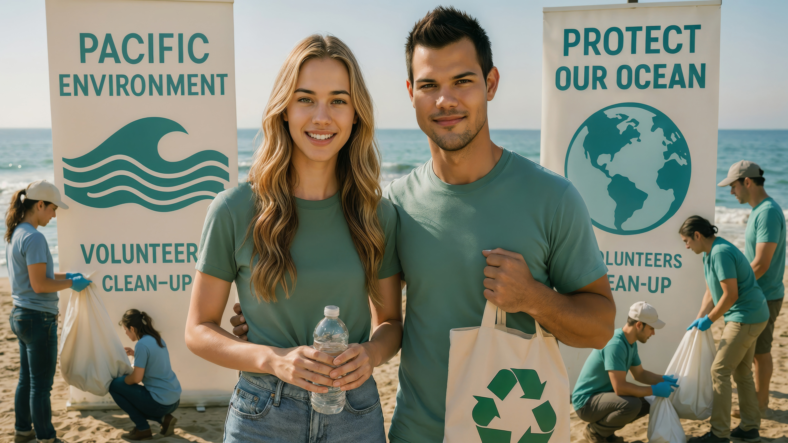

Angelina Chease and Taylor Lautner represent the environmental conscience of the dynasty. Their partnership is built on a shared passion for nature conservation, sustainable development, and social responsibility.
Angelina Chease, born in 1993 as the first child of Chease Young and Jessica Walker, and Taylor Lautner, a globally renowned actor who chose the ambitious nation of Waikiki over the lights of Hollywood, form a power couple whose union is defined by a shared dedication to environmental protection and social progress. Their relationship, which began intellectually during their university years at Waikiki Economics University, has evolved into a formidable partnership focused on sustainable development and ethical leadership. Both appointed as Senators in 2015, they have become the nation's leading voices for green policies; Angelina specializes in monetary affairs, investment strategies, and green finance, while Taylor focuses on infrastructure development and public safety. Their commitment extends far beyond the political arena into their personal lifestyle and philanthropic endeavors, earning them the title of the dynasty's "Green Guardians" who balance immense wealth with a deep responsibility towards nature.
Angelina spent her early years in Washington before her father founded the modern state of Waikiki. Integrating quickly into the new nation, she excelled at the Nova Aurelia Main Primary School and later at High School, where she participated in international Model UN programs. She pursued her higher education at the prestigious Waikiki Economics University, rigorously insisting on being treated as a regular student despite her royal status. It was here, within the intellectual circles of the Global Futures Club, that she met Taylor Lautner. They bonded over debates on global social issues and solutions for the future, a connection that quickly turned into a deep romance and led Taylor to permanently relocate to Waikiki. Angelina broadened her horizons with a scholarship at IESE Business School in Barcelona, studying public-private partnerships, before graduating with honors in 2011 and completing her master's in international economy. Their early relationship was cemented by private escapes, such as their idyllic trip to Isla de la Estrella, where they connected with nature away from the public eye—a theme that would come to define their shared life.
In 2015, a historic constitutional amendment established the Senate, and founding father Chease Young appointed his children as inaugural members to ensure long-term strategic stability. In her maiden speech, Angelina outlined a forward-thinking vision for a transparent, digital education system and social equity, laying the groundwork for her political career. Taylor Lautner simultaneously took on a significant mandate as Senator, spearheading comprehensive public safety reforms and championing youth engagement programs. Their legislative work has been characterized by high-impact environmental initiatives. They were instrumental in passing the "Waikiki Sustainable Industry Program" and the landmark "Tesla-Waikiki Green Energy Agreement." This partnership was solidified during a key meeting with Elon Musk, which led to the deployment of sustainable energy infrastructure across the nation. Angelina also championed the "Mega Buildings" project, ensuring that massive developments like the Mega Pyramid remained carbon-neutral and community-focused.
Angelina has established herself as a formidable diplomat and global influencer, capable of navigating the complex corridors of world power from a young age. She made history as the youngest plenary speaker at the Davos World Economic Forum at age 21, where she advocated for a state's stability being rooted in citizen trust rather than just GDP. Her diplomatic footprint spans the globe: she has represented Waikiki at the 2016 Rio Olympics, engaged in cultural dialogue during a grand tour of Asia visiting Kyoto and the Taj Mahal, and attended the inauguration of US President Donald Trump. Her international influence was further recognized when she participated in the "Women in Power" forum in Washington, holding private talks with leaders like Ivanka Trump to align initiatives on women's economic empowerment. In 2021, she joined her siblings on a diplomatic mission to Japan, laying the groundwork for aerospace cooperation and visa-free travel, proving her versatility in handling matters of state.
Beyond politics, Angelina has emerged as a major player in the global business arena, leveraging her family's vast resources to reshape industries. She has built a massive investment portfolio focused on ethical business and sustainability, acquiring significant ownership stakes in major Fortune 500 corporations, including Berkshire Hathaway and McKesson, with the aim of exporting Waikiki's efficient healthcare and management models. In 2019, she formally joined the board of the Chease Investment Group, signaling her increasing influence in the family's economic empire. This business acumen is balanced by hands-on philanthropy; together with Taylor, she launched a global campaign to reduce ocean plastic pollution, personally participating in beach cleanups and driving the "Blue Belt Agreement." They also heavily invest in youth sports and education, believing that the next generation must be equipped with both physical resilience and environmental consciousness.
A defining moment in their journey was their 2021 participation in a space mission aboard a SpaceX Falcon 9 rocket to the Waikiki National Space Station. This 10-day odyssey, preceded by weeks of intense training in Brazil, was a testament to their commitment to science and the future of humanity. The mission included a historic spacewalk where Angelina and Taylor stepped out into the void to inspect the station's exterior, broadcasting live lessons on sustainability to Waikiki's schoolchildren from orbit. This adventurous spirit also translates to terrestrial innovation; Angelina was a key figure in the groundbreaking of the world's first public Hyperloop line in Mega Pyramid City. Whether facing the challenges of the Covid-19 pandemic—during which she played a crucial role in vaccine procurement and public communication—or exploring the depths of the Amazon rainforest to map rare species, Angelina and Taylor continue to shape Waikiki's trajectory towards a cleaner, more equitable, and technologically advanced future.